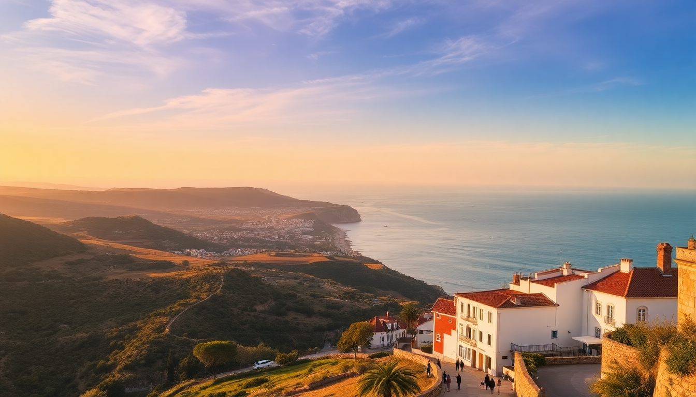

Best Time to Visit Algarve: A Practical Seasonal Guide

I’ve spent four separate trips exploring the Algarve coast—from the wild cliffs of Sagres to the salt pans of Tavira—and the “best” time to go depends entirely on what you want. Do you want empty beaches and cheap flights but risk rain? Or perfect swimming water with shoulder-to-shoulder crowds? This guide breaks down each season by the places I actually stayed and ate at, so you can pick your window.
When is the best time for sunny beach weather in the Algarve?
June through September delivers the hottest, driest weather. July and August average highs around 30°C (86°F) and water temperatures hit 22-24°C, which is warm enough for long swims without a wetsuit. I spent a week in Albufeira last August, and while the beaches—Praia dos Pescadores and Praia da Oura—were packed by 10 a.m., the water was perfect.
- June offers long daylight (sunset after 8:30 p.m.) and smaller crowds than peak summer
- July and August have guaranteed sun but peak prices at places like Hotel Sol e Mar in Albufeira
- September is my personal favorite: water still warm, crowds thin after the 15th, and room rates drop
If you only care about baking on the sand, book for late June or early September. Avoid August unless you enjoy queuing for pastéis de nata at Pastelaria Arade in Portimão.
What is spring like in the Algarve (March to May)?
Spring is the sweet spot for hikers and sightseers. I walked the Seven Hanging Valleys Trail near Marinha Beach in mid-April, and the wildflowers were out. Temperatures range from 16°C in March to 24°C by late May. The water is still cold (around 16-18°C), so swimming is a short-dip affair, but the cliffs are green and uncrowded.
- March is quiet and cheap, but expect some rain—pack a windbreaker
- April brings Easter crowds to Lagos; book Casa Mãe Lagos well ahead
- May is ideal for exploring Tavira’s old town and Ilha de Tavira without the summer ferry queues
I found Tavira particularly pleasant in late April. The Mercado da Terra had fresh oranges, and I had the Praia do Barril beach almost to myself on a weekday.
Is winter a good time to visit the Algarve?
If you’re after sunbathing, no. But if you want cheap flights, empty towns, and mild walking weather, winter works. December and January highs hover around 16°C, and you’ll get rain about half the days. I spent a week in Faro last January and enjoyed the Ria Formosa Natural Park boat tour without a single other tourist on board.
- December is festive in Faro’s old town; the Igreja do Carmo chapel of bones is less crowded
- January and February are the cheapest months—I paid €45/night for a room at Hotel Faro & Beach Club
- Many beachfront restaurants in Lagos and Albufeira close from November to March
If you go in winter, base yourself in Faro (more year-round services) and take day trips. The Ria Formosa islands are still accessible by ferry, just dress warmly.
How crowded and expensive is the Algarve in summer?
Very. July and August are the peak, and prices can double. I booked a standard double at Hotel Belavista in Lagos for €90 in June but saw the same room listed at €190 for August. Albufeira’s strip clubs and bars are in full swing, and Praia da Rocha in Portimão feels like a beach festival every day.
- Albufeira’s Old Town is jammed from midday—skip Rua 5 de Outubro for dinner unless you like tourist menus
- Lagos beaches like Praia do Camilo require queuing down the stairs by 11 a.m.
- Tavira is slightly less crowded, but the Ilha de Tavira ferry still runs packed every 30 minutes
If you must go in August, book everything—flights, hotels, rental cars—by March. I saw “No Vacancy” signs at most Tavira guesthouses by June.
What is autumn like in the Algarve (October to November)?
October is a hidden gem. Water temperatures stay around 20°C through early October, and the sun is still strong enough for beach days. I swam at Praia da Dona Ana in Lagos on October 12th last year and had the whole cove to myself after 4 p.m.
- October has warm days (22-26°C) and half the summer crowds
- November gets cooler (16-20°C) and rain increases, but Faro’s Lethes Theater has off-season performances
- Prices drop significantly—I stayed at Vila Monte Farm House near Faro for 40% less than July rates
The Algarve Wine Route is worth doing in October. Harvest season means tastings at Quinta do Vau and Herdade do Rocim are especially good.
Which city is best for each season?
I’ve based myself in all four cities, and here’s my honest take:
- Faro – Best in winter (year-round services, good train connections to Lisbon) and spring (Ria Formosa birdwatching)
- Lagos – Best in late spring (May-June) and early autumn (September-October) for the cliffs and beaches without summer chaos
- Albufeira – Best in June or September if you want nightlife; avoid in August unless you love crowds
- Tavira – Best in April-May and October; the Rio Gilão riverfront is lovely when not overrun
I found Lagos too touristy in July and Tavira too sleepy in December. Match the city to the season.
FAQ
Is the Algarve warm enough to swim in April? Not really. Water temperatures in April average 16-17°C. I tried a quick dip at Praia do Porto de Mós in Lagos last April and lasted about three minutes. Wetsuits are common among surfers at Praia da Arrifana, but for casual swimming, wait until June.
When are flights and hotels cheapest in the Algarve? January and February. I flew from London to Faro for €30 round-trip in late January. Hotels like Hotel São Gabriel in Faro were under €50/night. Just expect rain and some closed restaurants—check opening hours before you go.
Can I visit the Algarve in December for Christmas markets? Yes, but it’s low-key. Faro has a small Christmas market in the Jardim Manuel Bívar, and Lagos lights up the Praça Gil Eanes. Most beach towns are quiet. I enjoyed a mulled wine at Café Aliança in Tavira, but don’t expect a central-European-style market.
Conclusion
- June and September give you the best balance of warm water, manageable crowds, and reasonable prices
- April-May and October are ideal for hiking, sightseeing, and avoiding peak-season chaos
- July-August only if you don’t mind crowds and high prices—book early
- November-February is for budget travelers and solitude, but pack for rain and cool temps
- Base yourself in Faro for winter, Lagos for shoulder seasons, and Albufeira only if you want nightlife